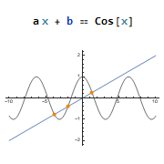
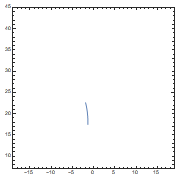

Набор формул: математические операторы, греческие буквы и другие специальные символы. Конвертирование формул в и из LaTeX кода.
M-выражения ― универсальная форма записи операторов, функций и структур данных. Выражения Part[] (), FullForm[] и TreeForm[]. Принципы работы механизма символьных вычислений: правила замены и паттерны. Переменные и функции как глобальные правила, выражения Set[] (=) и SetDelayed[] (:=) для задания правил.
Основы функционального программирования: анонимные функции (&) и безымянные аргументы (#, #2, …), префиксная (@) и постфиксная (//) нотации, перегрузка функций, применение функций к спискам. Функции высшего порядка: Apply[] (@@ и @@@), Map[] (/@), Nest[], NestList[] и Fold[].
Выражения для построения графиков Plot[], ListPlot[] и ParametricPlot[], их связь и специализированные аналоги. Параметры внешнего вида и подстановки. Объединение графиков при помощи Show[].
Динамические выражения и интерактивные элементы, метавыражение Manipulate[].
Семинар 3
Алгебраические уравнения

Правила замены Rule[] (→), локальные подстановки ReplaceAll[] (/.) и ReplaceRepeated[] (//.). Выражения сравнения Equal[] (⩵), Unequal[] (≠), GreaterEqual[] (≥) и подобные.
Поиск аналитических решений систем алгебраических уравнений и неравенств при помощи выражения Solve[], явное и неявное задание неизвестных, отбор решений. Комплексные числа, формы мнимой единицы (𝕚, I, √-1), алгебраические операции и выражение ComplexExpand[], выражения для действительной и мнимой частей (Re[], Im[], ReIm[]).
Выражения NSolve[] и FindRoot[] для решения алгебраических систем численными методами, задание области решений и начального приближения. Подстановка решений в выражения, откладывание корней на графиках.
*Локальные замены с отложенным вычислением RuleDelayed[] (:→).
Семинар 4
Дифференциальные уравнения

Аналитическое дифференцирование, выражение D[] ('), частные производные и производные высшего порядка. Аналитическое взятие интегралов выражением Integrate[] (∫…𝕕), неопределённые и определённые интегралы, задание пределов интегрирования в краткой записи. Численное интегрирование выражением NIntegrate[], параметры метода и точности, сравнение с N@Integrate[].
Выражения DSolve[] и NDSolve[] для аналитического и численного решения систем дифференциальных уравнений (ОДУ), константы интегрирования и начальные условия. Построение графиков решений.
*Неявные начальные условия. Системы дифференциально-алгебраических уравнений (ДАЕ).
Семинар 5
Рисунки и анимация
Выражение Graphics[] как общий формат векторных рисунков, графические примитивы, параметры внешнего вида примитивов. Графики как частный случай Graphics[], встраивание графиков в векторные рисунки и добавление графических примитивов на графики. Параметрическая анимация.
*Цвета в Wolfram Mathematica, общее выражение RGBColor[] и цветовые константы. Краткая форма выражения и графический интерфейс выбора цветов. Операции с цветами, выражения Lighter[], Darker[] и Blend[].
Автоматизированный вывод и решение уравнений Лагранжа. Интеграция с параметрической анимацией. Экспорт графиков и рисунков в векторном (.pdf) формате. Экспорт анимации в последовательность кадров (.png).
*Рендер LaTeX выражений в Wolfram Mathematica.